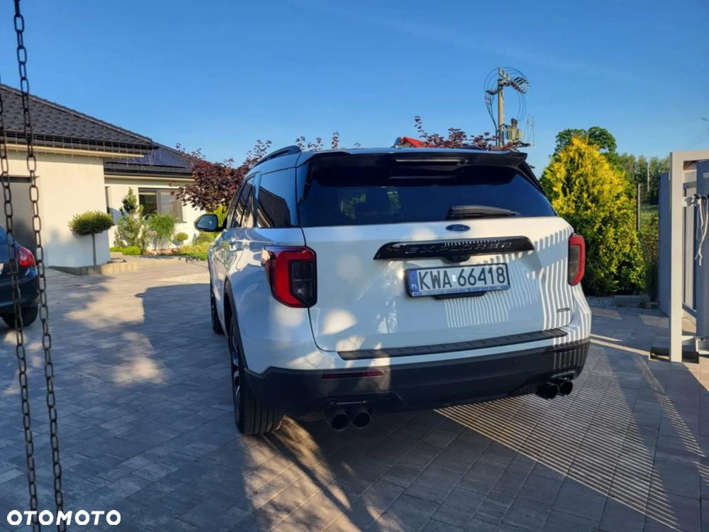
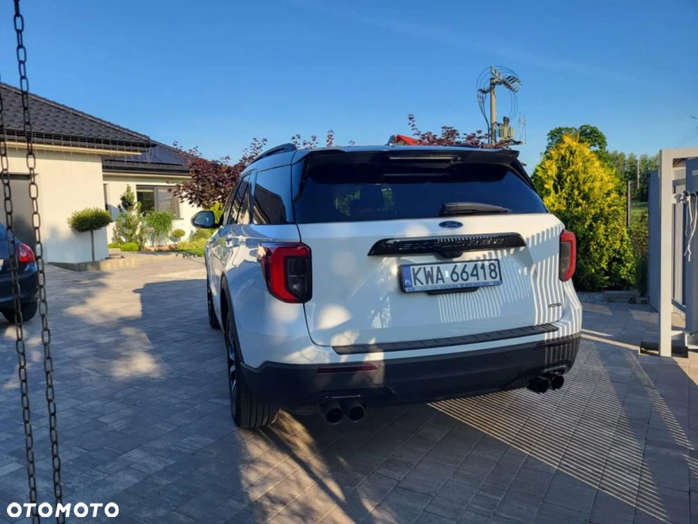
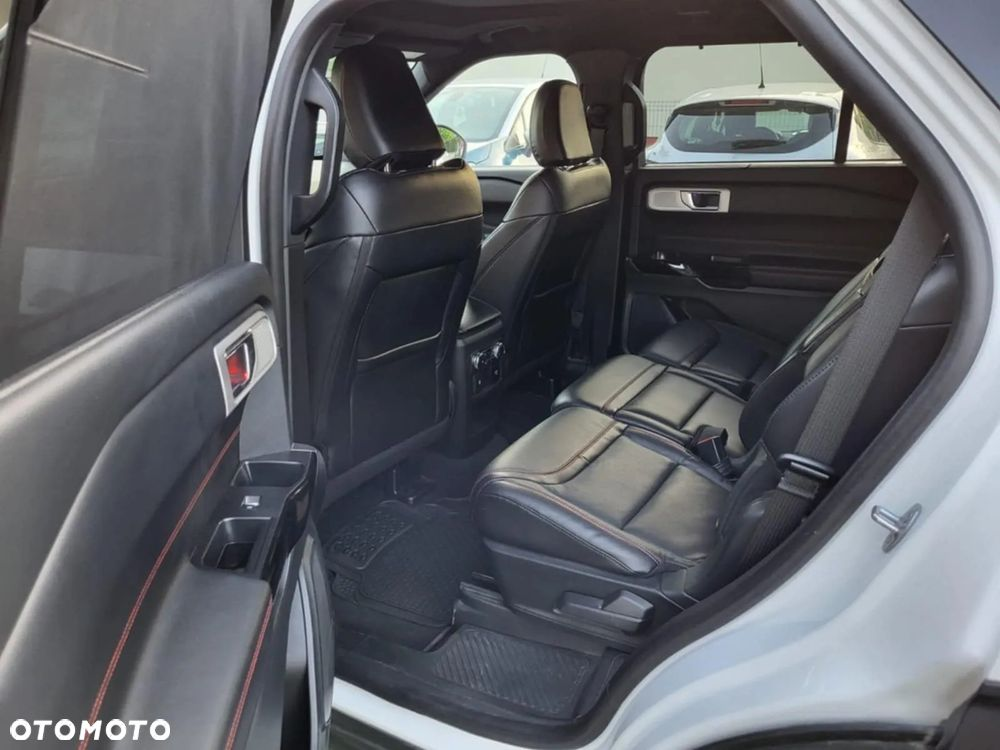
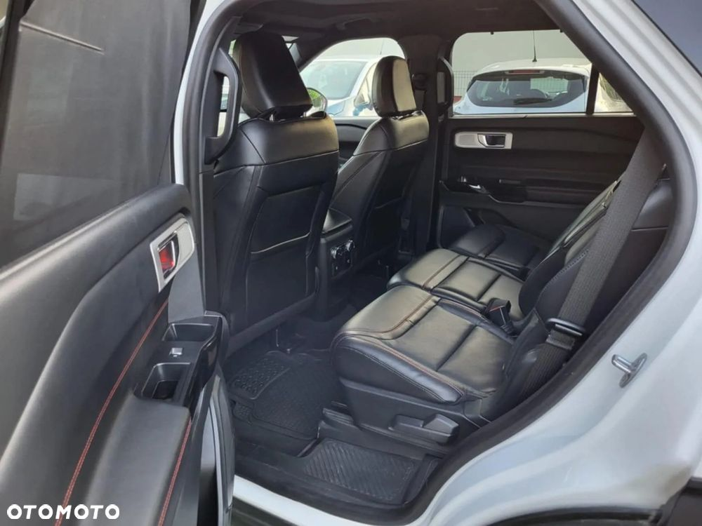

Na sprzedaż oferuję Ford Explorer ST-Line Plug-In Hybrid o łącznej mocy 465 KM z napędem na cztery koła. Auto z grudnia 2021 roku o przebiegu 55tys. regularnie serwisowane w serwisie Forda (świeżo wymieniony olej w silniku z kompletem filtrów) przegląd ważny do 08.12.2026 Świetna alternatywa dla SUV-ów klasy premium.... komfort, przestrzeń, osiągi i oszczędność dzięki napędowi hybrydowemu plug-in. Możliwość sprawdzenia auta w autoryzowanym serwisie. Z braku czasu nie odpisuję na smsy i emaile, proszę o kontakt telefoniczny w celu uzyskania szczegółowych informacji. Sprzedaż na umowę, lub faktura Vat-marża, bez możliwości odliczenia VAT-u.


 
 
